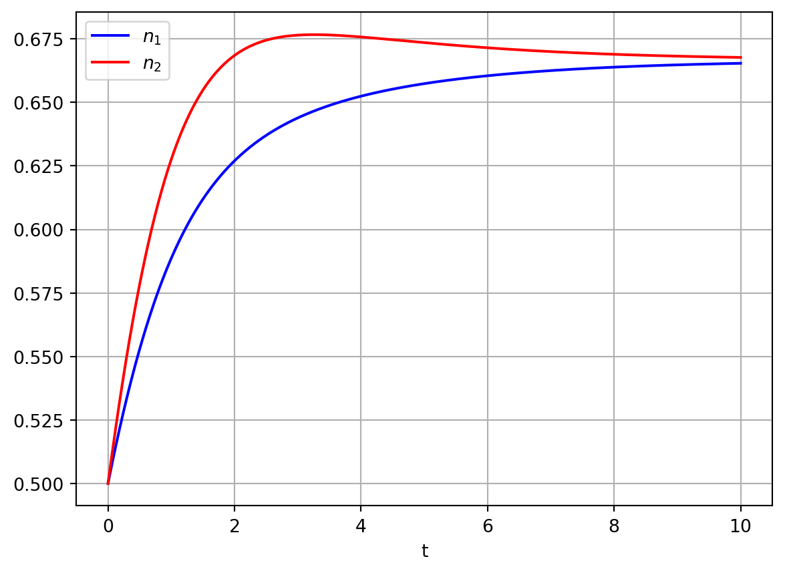
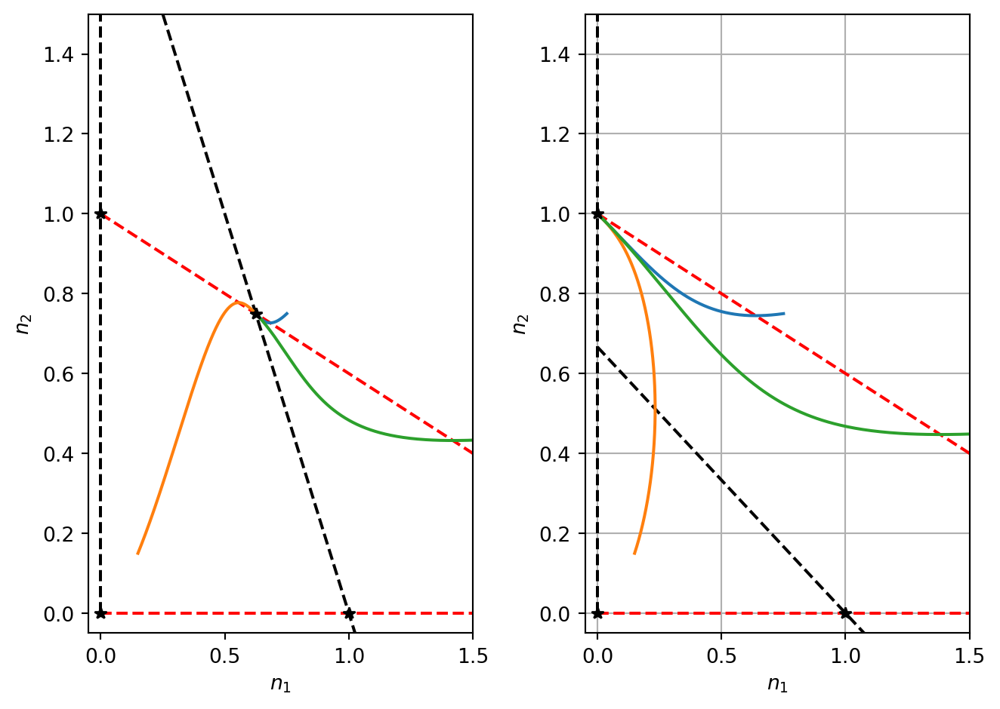

Consider the system of nonlinear ODEs given by \[
\begin{aligned}
\dot{x}&=f(x,y),\\
\dot{y}&=g(x,y),
\end{aligned}
\tag{5.1}\] where \(f\) and \(g\) are smooth functions of \(x\) and \(y\).
In vector form \[
\dot{\mathbf{x}}=\mathbf{f}(\mathbf{x})
\] where \(\mathbf{x}=(x,y)^T\) and \(\mathbf{f}=(f,g)^T\).
Here \(\mathbf{x}\) represents a point in the phase plane, \(\dot{\mathbf{x}}\) represents the velocity. By flowing along the vector field, a phase point traces out a trajectory\(\mathbf{x}(t)\). As each point in the plane can be an initial condition, the plane is filled with trajectories.
5.2 Existence, uniqueness and topological consequences
Theorem 1
Consider the initial value problem \[
\dot{\mathbf{x}}=\mathbf{f}(\mathbf{x}), \quad \mathbf{x}(0)=\mathbf{x}_0,
\] Suppose that \(\mathbf{f}\) is continuous and that all partial derivatives exist and are continuous in some open connected set \(D\subset \mathbf R ^n\). For \(\mathbf{x}_0 \in D\), the IVP has a unique solution in some time interval \(t \in (\tau,\tau)\).
Corollary 2
Different trajectories never intersect.
Corollary 3
In 2D, trajectories initialised inside a closed orbit remain trapped inside it for all time.
5.3 Fixed points and linearisation
5.3.1 Fixed points
\((x^*,y^*)\) is defined to be a fixed point of Equation 5.1 if
\[
f(x^*,y^*)=g(x^*,y^*)=0.
\]
Hence, by definition, the time derivatives of \(x(t)\) and \(y(t)\) are both zero at \((x^*,y^*)\). As was the case for single species models, fixed points are obtained by solving algebraic equations.
5.3.2 Linear stability analysis
Suppose that \((x^*,y^*)\) is a fixed point of equations Equation 5.1.
We consider a change of dependent variables such that
In the neighbourhood of fixed points, we expect the higher order terms to become vanishingly small. If we are willing to neglect the higher order terms then close to the fixed points we can describe the dynamics the dynamics using the linearised system \[
\frac{d \mathbf{w}}{dt}= A \mathbf{w},
\tag{5.5}\]
5.4 Phase portraits
For nonlinear problems it is usually impossible to find trajectories analytically. Instead, our goal is to describe the qualitative behaviour of trajectories. Some important features of phase portraits are:
fixed points
close orbits
behaviour of trajectories close to fixed points
the stability of any fixed points and closed orbits
the vector field
nullclines
We can often sketch solutions in the phase plane using the above information.
Example 5.1 Plot a phase portrait for the system: \[
\begin{aligned}
\dot{x}&=x+e^{-y}\\
\dot{y}&=-y
\end{aligned}
\]
Strategy: - fixed points and their linear stability - nullclines - derivative/vector field - sample trajectories
5.5 Neglecting nonlinear terms?
Definition 4
A fixed point of an \(n^{th}\) order system is hyperbolic if all the eigenvalues of the linear system lie off the imaginary axis (i.e. \(\Re(\lambda_i) \ \neq \ 0 \\forall i\)).
Theorem 5
Hartman-Grobman
The local phase portrait near a hyperbolic fixed point is topologically equivalent (i.e. homeomorphic) to the phase portrait of the linearisation.
Definition 6
Structural stability
A phase portrait is structurally stable if its topology cannot be changed by an arbitrarily small change to the vector field.
Example 5.2 Consider the system \[
\begin{aligned}
\dot{x} & =-y+ax(x^2+y^2)\\
\dot{y} & =x+ay(x^2+y^2)
\end{aligned}
\] where \(a\in\Re\). Show that the linearised system incorrectly predicts that the origin is a centre. By transforming to polar coordinates show that the system is actually either a stable/unspiral for \(a\neq 0\).
5.6 Competition
In models of competition, two or more species compete for the same resource or in some way inhibit each other’s growth. Letting \(N_1(t)\) and \(N_2(t)\) represent the population density of two species, we consider the ODEs \[
\begin{aligned}
\frac{d N_1}{dt} &= r_1N_1\left(1-\frac{N_1}{K_1}-b_{12}\frac{N_2}{K_1}\right), \nonumber \\
\frac{d N_2}{dt} &= r_2N_2\left(1-\frac{N_2}{K_2}-b_{21}\frac{N_1}{K_2}\right),
\end{aligned}
\] where \(r_1\), \(r_2\), \(K_1\) and \(K_2\) are positive constants. As before, the \(r's\) are linear growth rates and the \(K\)’s are carrying capacities. The parameters \(b_{12}\) and \(b_{21}\) measure the competitive effect of \(N_2\) on \(N_1\) and \(N_1\) on \(N_2\), respectively.
5.6.1 Nondimensionalisation
After nondimensionalising using the change of variables
The fixed points of Equation 5.6 are identified in the usual manner, i.e. by seeking \(({n_1}^*,{n_2}^*)\) such that
\[
f({n_1}^*,{n_2}^*)=g({n_1}^*,{n_2}^*)=0.
\]
The fixed point equations are \[
{n_1}^*\left(1- {n_1}^*-a_{12}{n_2}^*\right)=0 \ \ \ \ {n_2}^*\left(1-{n_2}^*-a_{21}{n_1}^*\right)=0.
\] The first equation has solution \[
n_1^*=0
\] or \[
\left(1- {n_1}^*-a_{12}{n_2}^*\right) \implies n_2=\frac{1}{a_{12}}(1-n_1^*).
\] Consider \(n_1^*=0\). Substitution in the second equation yields \[
{n_2}^*\left(1-{n_2}^*\right)=0.
\] Hence either \(n_2^*=0\) or \(n_2^*=1\). Hence two steady states are \((0,0)\) and \((0,1).\)
Now consider \(n_2^*=\frac{1}{a_{12}}(1-n_1^*)\) with \(n_1^*\neq0\).
Substitution in the second fixed point equation yields \[
\frac{1}{a_{12}}(1-n_1^*) \left(1- \frac{1}{a_{12}}(1-n_1^*) -a_{21}{n_1}^*\right)
\] Hence either \(n_1^*=1\) or \[
\left(1- \frac{1}{a_{12}}(1-n_1^*) -a_{21}{n_1}^*\right)=0 \implies n_1^*=\frac{1-a_{12}}{1-a_{12}a_{21}}.
\] In the case where \(n_1^*=1\), we find that \(n_2^*=0\). Hence the fixed point is (1,0).
In the case where \[
n_1^*=\frac{1-a_{12}}{1-a_{12}a_{21}}
\] we find that \[
n_2^*=\frac{1-a_{21}}{1-a_{12}a_{21}}
\] Hence the fixed point is \[
\left(\frac{1-a_{12}}{1-a_{12}a_{21}},\frac{1-a_{21}}{1-a_{12}a_{21}}\right).
\]
5.6.3 Nullclines
The nullclines for Equation 5.6 are straight lines given by
\[
n_1=0 \ \ \ \ \ n_2=\frac{1-n_1}{a_{12}},
\]
and
\[
n_2=0 \ \ \ \ \ n_2= 1-a_{21}n_1.
\]
Note that the fixed points \((0,0)\), \((1,0)\) and \((0,1)\) are always biologically relevant (i.e. independently of the parameter values for \(a_{12}\) and \(a_{21}\)).
However, the coexistence fixed point is only biologically relevant if the nullclines intersect in the positive quadrant and this occurs only in certain regions of the model’s parameter space.
In the cases where \(a_{12},a_{21}<1\) and \(a_{12},a_{21}>1\) there is a coexistence fixed point (i.e. the nullclines intersect in the positive quadrant).
However, if \(a_{21}<1\) and \(a_{12}>1\) or \(a_{12}<1\) and \(a_{21}>1\) there is not a biologically relevant, coexistence fixed point (i.e. the nullclines do not intersect in the positive quadrant).
Hence there are are four qualitatively different types of solution to consider.
5.6.4 Linear stability
The linear stability of the different fixed points is determined by calculating the Jacobian matrix
Hence the eigenvalues of the Jacobian are \(1\) and \(\rho\). As \(\rho>0\), the origin is therefore an unstable node (there are two real positive eigenvalues).
Hence if \(a_{21}<1\), \(\det{A}<0\) and (1,0) is a saddle point and thus unstable (see Figure 4.1).
If \(a_{21}>1\), \(\det{A}>0\) and \(\mathrm{tr}{A}<0\). Hence (1,0) is a stable node.
Hence the parameter \(a_{21}\), which describes how strongly Population 1 inhibits the growth rate of Population 2, determines whether or not the fixed point representing extinction of Population 2 but not Population 1 is stable or not.
In this case if \(a_{12}<1\), \(\det{A}<0\) and (0,1) is a saddle point. If \(a_{12}>1\), \(\det{A}>0\) and \(\mathrm{tr}{A}<0\) and (0,1) is a stable node. Hence the parameter \(a_{12}\), which describes how strongly Population 2 inhibits the growth rate of Population 1, determines whether or not the fixed point representing extinction of Population 1 but not Population 2 is stable or not.
At the coexistence fixed point, recall the fixed point is
\[
\left(\frac{1-a_{12}}{1-a_{12}a_{21}},\frac{1-a_{21}}{1-a_{12}a_{21}}\right).
\] Note that this fixed point is only biologically relevant in the cases \(a_{21}<1, a_{12}<1\) or \(a_{21}>1, a_{12}>1\). Evaluating the Jacobian yields \[
A=\frac{1}{1-a_{12}a_{21}}\left(\begin{array}{rr}
a_{12}-1 & -a_{12}(1-a_{12})\\ -\rho a_{21}(1-a_{21}) &\rho(a_{21}-1)\end{array}\right).
\]
The determinant and trace of the Jacobian are given by
Let’s firstly consider the case where \(a_{21}<1\) and \(a_{21}<1\). This implies that \(a_{21}-1<0\) and \(a_{12}-1<0\), hence evaluating the signs of the different products yields
Therefore the coexistence fixed point is a stable node or spiral.
In the case where \(a_{21}>1\) and \(a_{12}>1\)
\[
\det{A} = \rho(+)(+)(-)<0 .
\]
Hence the coexistence fixed point is a saddle.
5.6.5 Phase portrait
See Figure 5.2 for phase portraits of three of the four cases that we have considered. It is expected that you can sketch phase portraits. Key details to consider are the fixed points and their linear stability. You should also sketch the nullclines and depict the sign of the derivatives in the phase plane on either side of the nullclines. You should also sketch one or more sample trajectories.
Code
import numpy as npimport matplotlib.pyplot as pltimport scipyfrom scipy.integrate import odeint# Define model parametersrho=1.5a_12=0.5a_21=0.5# Define rhs of ODEsdef rhs_comp_model(x,t): rhs=np.zeros_like(x) n_1=x[0] n_2=x[1] dn_1_dt=n_1*(1-n_1)-a_12*n_1*n_2 dn_2_dt=rho*(n_2*(1-n_2)-a_21*n_1*n_2) rhs[0]=dn_1_dt rhs[1]=dn_2_dtreturn rhs# Define discretised time domaint = np.linspace(0, 10, 1000)# Define ICinit_cond=[0.5,0.5]# Numerically integrate ODessol1 = odeint(rhs_comp_model, init_cond,t)# PLot resultsn_1=sol1[:,0]n_2=sol1[:,1]fig, ax=plt.subplots()ax.plot(t, n_1, 'b',t,n_2,'r')ax.legend(['$n_1$','$n_2$'],loc='best')ax.set_xlabel('t')plt.grid()plt.show()

Figure 5.1: Numerical solutions of competition model
Code
# Phase plane for the competition model import numpy as npimport matplotlib.pyplot as pltimport scipyfrom scipy.integrate import odeint# Discretise n domainn_1_vec=np.linspace(0,5,100)# COmpute different elements of the phase planedef ComputeCompetitionSol(a_12,a_21,n_1_vec): t = np.linspace(0, 10, 1000)# Different ICs for integrating trajectories init_cond1=[0.75,0.75] init_cond2=[0.15,0.15] init_cond3=[2.5,0.5]# Integrate the ODEs alpha=2.0 sol1 = odeint(rhs_comp_model, init_cond1,t) sol2 = odeint(rhs_comp_model, init_cond2,t) sol3 = odeint(rhs_comp_model, init_cond3,t)# determine which case we are in num_steady_states=3 fourth_ss_condition= ((a_12<1) & (a_21<1)) | ((a_12>1) & (a_21>1))if fourth_ss_condition==True: num_steady_states=4# Compute the steady dstates ss=np.zeros((num_steady_states,2),dtype=float) ss[0,:]=[0,0] ss[1,:]=[1,0] ss[2,:]=[0,1]if fourth_ss_condition==True: ss[3,:]=[(1-a_12)/(1-a_12*a_21),(1-a_21)/(1-a_12*a_21)]# Compute the nullclines n1_ncline_1_n_1=[0,0] n1_ncline_1_n_2=[0,5] n1_ncline_2_n_2=1/a_12*(1-n_1_vec) n2_ncline_1_n_1=[0,5] n2_ncline_1_n_2=[0,0] n2_ncline_2_n_2=1-a_21*(n_1_vec)# Return the various computed QUANTITIESreturn sol1,sol2,sol3,ss,n1_ncline_1_n_1,n1_ncline_1_n_2,n1_ncline_2_n_2,n2_ncline_1_n_1,n2_ncline_1_n_2,n2_ncline_2_n_2# Compute quantitiesa_12=0.5a_21=0.4sol1,sol2,sol3,ss, n1_ncline_1_n_1,n1_ncline_1_n_2,n1_ncline_2_n_2,n2_ncline_1_n_1,n2_ncline_1_n_2,n2_ncline_2_n_2=ComputeCompetitionSol(a_12,a_21,n_1_vec)# PLot phase planefig, ax = plt.subplots(1,2)ax[0].plot(n1_ncline_1_n_1,n1_ncline_1_n_2,'k--')ax[0].plot(n_1_vec,n1_ncline_2_n_2,'k--')ax[0].plot(n2_ncline_1_n_1,n2_ncline_1_n_2,'r--')ax[0].plot(n_1_vec,n2_ncline_2_n_2,'r--')ax[0].plot(sol1[:,0],sol1[:,1],sol2[:,0],sol2[:,1],sol3[:,0],sol3[:,1])ax[0].plot(ss[:,0],ss[:,1],'k*')ax[0].set_xlabel('$n_1$')ax[0].set_ylabel('$n_2$')ax[0].set_xlim([-0.05,1.5])ax[0].set_ylim([-0.05,1.5])# Compoute quantitied for different parametersa_12=1.5a_21=0.4sol1,sol2,sol3,ss, n1_ncline_1_n_1,n1_ncline_1_n_2,n1_ncline_2_n_2,n2_ncline_1_n_1,n2_ncline_1_n_2,n2_ncline_2_n_2=ComputeCompetitionSol(a_12,a_21,n_1_vec)# PLot phase planeax[1].plot(n1_ncline_1_n_1,n1_ncline_1_n_2,'k--')ax[1].plot(n_1_vec,n1_ncline_2_n_2,'k--')ax[1].plot(n2_ncline_1_n_1,n2_ncline_1_n_2,'r--')ax[1].plot(n_1_vec,n2_ncline_2_n_2,'r--')ax[1].plot(sol1[:,0],sol1[:,1],sol2[:,0],sol2[:,1],sol3[:,0],sol3[:,1])ax[1].plot(ss[:,0],ss[:,1],'k*')ax[1].set_xlabel('$n_1$')ax[1].set_ylabel('$n_2$')ax[1].set_xlim([-0.05,1.5])ax[1].set_ylim([-0.05,1.5])plt.tight_layout()plt.grid()plt.show()

Figure 5.2: Numerical solution of the competition model
5.6.6 Insight
The model therefore has four qualitatively different behaviours that are described as follows: Consider the case where \(a_{21}>1\). This represents the case of Population 1 strongly competing with Population 2.
If \(a_{12}>1\), Population 2 also strongly competes with Population 1. In this case, there are four biologically relevant fixed points, two of which are stable (1,0) and (0,1). The coexistence fixed point is a saddle and thus unstable. The model is bistable and the initial conditions determine whether solutions end up at (1,0) or (0,1) (see Figure 5.2). The biological interpretation of this solution is that one species will always win and completely outcompete the other. Even if the two populations are equal (\(K_1=K_2\) and \(a_{21}=a_{12}>1\)), one species will always win and the other will become extinct.
If \(a_{12}<1\), Population 2 weakly competes with Population 1. There is no coexistence fixed point and the only stable fixed point is (1,0). Hence Population 1 always wins and Population 2 always becomes extinct.
Now consider the case where \(a_{21}<1\). This represents the case of Population 1 weakly competing with Population 2.
If \(a_{12}>1\), Population 2 strongly competes with Population 1. There is nonexistence fixed point and the only stable fixed point is (0,1). Hence Population 2 always wins and Population 1 always becomes extinct.
If \(a_{12}<1\), Population 2 also weakly competes with Population 1. The coexistence fixed point is stable and the fixed points (1,0) and (0,1) are unstable.
Example 5.3 Consider a particle of mass 1 moving in double well potential \[
V(x)=-\frac{1}{2}x^2+\frac{1}{4}x^4.
\]
The equation of motion is \[
m\ddot{x}=-\frac{dV}{dx}.
\] Find and classify all the fixed points for the system. Plot the phase portrait and provide an interpretation for the results.